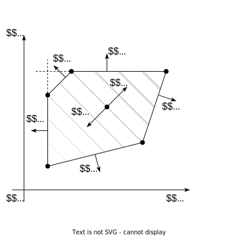
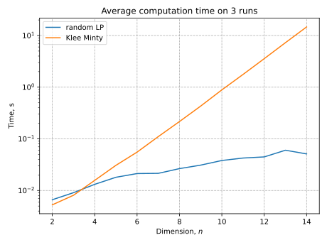

Linear Programming and simplex algorithm
1 What is Linear Programming?
Generally speaking, all problems with linear objective and linear equalities/inequalities constraints could be considered as Linear Programming. However, there are some widely accepted formulations.
\tag{LP.Basic} \begin{align*} &\min_{x \in \mathbb{R}^n} c^{\top}x \\ \text{s.t. } & Ax \leq b\\ \end{align*}

for some vectors c \in \mathbb{R}^n, b \in \mathbb{R}^m and matrix A \in \mathbb{R}^{m \times n}. Where the inequalities are interpreted component-wise.
Standard form. This form seems to be the most intuitive and geometric in terms of visualization. Let us have vectors c \in \mathbb{R}^n, b \in \mathbb{R}^m and matrix A \in \mathbb{R}^{m \times n}.
\tag{LP.Standard} \begin{align*} &\min_{x \in \mathbb{R}^n} c^{\top}x \\ \text{s.t. } & Ax = b\\ & x_i \geq 0, \; i = 1,\dots, n \end{align*}
2 Examples of LP problems
The prototypical transportation problem deals with the distribution of a commodity from a set of sources to a set of destinations. The object is to minimize total transportation costs while satisfying constraints on the supplies available at each of the sources, and satisfying demand requirements at each of the destinations.
Here we illustrate the transportation problem using an example from Chapter 5 of Johannes Bisschop, “AIMMS Optimization Modeling”, Paragon Decision Sciences, 1999. In this example there are two factories and six customer sites located in 8 European cities as shown in the following map. The customer sites are labeled in red, the factories are labeled in blue.
| Customer | Arnhem [€/ton] | Gouda [€/ton] | Demand [tons] |
|---|---|---|---|
| London | n/a | 2.5 | 125 |
| Berlin | 2.5 | n/a | 175 |
| Maastricht | 1.6 | 2.0 | 225 |
| Amsterdam | 1.4 | 1.0 | 250 |
| Utrecht | 0.8 | 1.0 | 225 |
| The Hague | 1.4 | 0.8 | 200 |
| Supply [tons] | 550 tons | 700 tons |
This can be represented as the following graph:

For each link we can have a parameter T[c,s] denoting the cost of shipping a ton of goods over the link. What we need to determine is the amount of goods to be shipped over each link, which we will represent as a non-negative decision variable x[c,s].
The problem objective is to minimize the total shipping cost to all customers from all sources.
\text{minimize:}\quad \text{Cost} = \sum_{c \in Customers}\sum_{s \in Sources} T[c,s] x[c,s]
Shipments from all sources can not exceed the manufacturing capacity of the source.
\sum_{c \in Customers} x[c,s] \leq \text{Supply}[s] \qquad \forall s \in Sources
Shipments to each customer must satisfy their demand.
\sum_{s\in Sources} x[c,s] = \text{Demand}[c] \qquad \forall c \in Customers
The code for the problem is available here: üíª
3 Basic transformations
Inequality to equality by increasing the dimension of the problem by m.
Ax \leq b \leftrightarrow \begin{cases} Ax + z = b\\ z \geq 0 \end{cases}
unsigned variables to nonnegative variables.
x \leftrightarrow \begin{cases} x = x_+ - x_-\\ x_+ \geq 0 \\ x_- \geq 0 \end{cases}
4 Duality
There are four possibilities:
- Both the primal and the dual are infeasible.
- The primal is infeasible and the dual is unbounded.
- The primal is unbounded and the dual is infeasible.
- Both the primal and the dual are feasible and their optimal values are equal.
5 Idea of simplex algorithm
- The Simplex Algorithm walks along the edges of the polytope, at every corner choosing the edge that decreases c^\top x most
- This either terminates at a corner, or leads to an unconstrained edge (-\infty optimum)
We will illustrate simplex algorithm for the simple inequality form of LP:
\tag{LP.Inequality} \begin{align*} &\min_{x \in \mathbb{R}^n} c^{\top}x \\ \text{s.t. } & Ax \leq b \end{align*}
Definition: a basis B is a subset of n (integer) numbers between 1 and m, so that \text{rank} A_B = n. Note, that we can associate submatrix A_B and corresponding right-hand side b_B with the basis B. Also, we can derive a point of intersection of all these hyperplanes from basis: x_B = A^{-1}_B b_B.
If A x_B \leq b, then basis B is feasible.
A basis B is optimal if x_B is an optimum of the \text{LP.Inequality}.
Since we have a basis, we can decompose our objective vector c in this basis and find the scalar coefficients \lambda_B:
\lambda^\top_B A_B = c^\top \leftrightarrow \lambda^\top_B = c^\top A_B^{-1}
5.1 Changing basis
Suppose, some of the coefficients of \lambda_B are positive. Then we need to go through the edge of the polytope to the new vertex (i.e., switch the basis)

x_{B'} = x_B + \mu d = A^{-1}_{B'} b_{B'}
5.2 Finding an initial basic feasible solution
Let us consider \text{LP.Canonical}.
\begin{align*} &\min_{x \in \mathbb{R}^n} c^{\top}x \\ \text{s.t. } & Ax = b\\ & x_i \geq 0, \; i = 1,\dots, n \end{align*}
The proposed algorithm requires an initial basic feasible solution and corresponding basis. To compute this solution and basis, we start by multiplying by −1 any row i of Ax = b such that b_i < 0. This ensures that b \geq 0. We then introduce artificial variables z \in \mathbb{R}^m and consider the following LP:
\tag{LP.Phase 1} \begin{align*} &\min_{x \in \mathbb{R}^n, z \in \mathbb{R}^m} 1^{\top}z \\ \text{s.t. } & Ax + Iz = b\\ & x_i, z_j \geq 0, \; i = 1,\dots, n \; j = 1,\dots, m \end{align*}
which can be written in canonical form \min\{\tilde{c}^\top \tilde{x} \mid \tilde{A}\tilde{x} = \tilde{b}, \tilde{x} \geq 0\} by setting
\tilde{x} = \begin{bmatrix}x\\z\end{bmatrix}, \quad \tilde{A} = [A \; I], \quad \tilde{b} = b, \quad \tilde{c} = \begin{bmatrix}0_n\\1_m\end{bmatrix}
An initial basis for \text{LP.Phase 1} is \tilde{A}_B = I, \tilde{A}_N = A with corresponding basic feasible solution \tilde{x}_N = 0, \tilde{x}_B = \tilde{A}^{-1}_B \tilde{b} = \tilde{b} \geq 0. We can therefore run the simplex method on \text{LP.Phase 1}, which will converge to an optimum \tilde{x}^*. \tilde{x} = (\tilde{x}_N \; \tilde{x}_B). There are several possible outcomes:
- \tilde{c}^\top \tilde{x} > 0. Original primal is infeasible.
- \tilde{c}^\top \tilde{x} = 0 \to 1^\top z^* = 0. The obtained solution is a start point for the original problem (probably with slight modification).
6 Convergence
Since the number of edge point is finite, algorithm should converge (except some degenerate cases, which are not covered here). However, the convergence could be exponentially slow, due to the high number of edges. There is the following iconic example, when simplex algorithm should perform exactly all vertexes.
6.1 Klee Minty example
In the following problem simplex algorithm needs to check 2^n - 1 vertexes with x_0 = 0.
\begin{align*} & \max_{x \in \mathbb{R}^n} 2^{n-1}x_1 + 2^{n-2}x_2 + \dots + 2x_{n-1} + x_n\\ \text{s.t. } & x_1 \leq 5\\ & 4x_1 + x_2 \leq 25\\ & 8x_1 + 4x_2 + x_3 \leq 125\\ & \ldots\\ & 2^n x_1 + 2^{n-1}x_2 + 2^{n-2}x_3 + \ldots + x_n \leq 5^n\ & x \geq 0 \end{align*}

7 Summary
- A wide variety of applications could be formulated as the linear programming.
- Simplex algorithm is simple, but could work exponentially long.
- Khachiyan’s ellipsoid method is the first to be proved running at polynomial complexity for LPs. However, it is usually slower than simplex in real problems.
- Interior point methods are the last word in this area. However, good implementations of simplex-based methods and interior point methods are similar for routine applications of linear programming.
8 Code
9 Materials
- Linear Programming. in V. Lempitsky optimization course.
- Simplex method. in V. Lempitsky optimization course.
- Overview of different LP solvers
- TED talks watching optimization
- Overview of ellipsoid method
- Comprehensive overview of linear programming
- Converting LP to a standard form